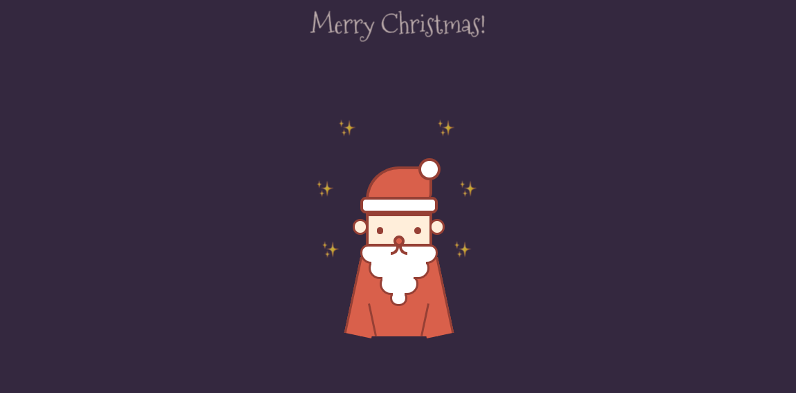

作品
单页应用：多人共享博客
点我预览
- 技术栈：vue-cli/vue2.x/ElementUI/axios/vue-router/vuex/es6/webapck
- 具体：本项目实现一款多人共享博客，具有首页、用户文章列表、登录、注册、个人管理、编辑、发布等功能。使用 Vue.js 技术栈，webpack进行打包。
CNODE社区
点我预览
- 技术栈：ES6、组件化、vue-cli 、vue-router、filter、computed、生命周期
- 具体：使用vue-cli作为脚手架，使用vue-router进行前端路由的切换及传参，使用watch监听路由的变化，使用axios获取数据，JSON格式化工具对数据整理，webpack打包
Canvas微画板
点我预览
- 技术栈：原生JS、HTML5 Canvas API、CSS3
- 具体：该项目用原生JS，调用HTML5 Canvas API实现了线粗，换色，笔擦，保存等功能。用切换className实现了笔的线粗，颜色切换，用context.clearRect()实现橡皮，全屏清空，保存到本地，用viewport，移动端事件等实现了触屏设备兼容。
自定义导航首页
点我预览
- 技术栈：原生JS、locationStorage
- 具体：为键盘上的 26 个字母绑定了导航网址，敲击字母即可跳转至相应导航页面，还可以自定义每个键绑定的导航网址。主要利用原生 JavaScript 实现。

豆瓣搜索
点我预览
- 技术栈：原生JS、Sass、Pacel、Jquery
- 具体：功能为查询北美票房，TOP250，电影搜索。利用豆瓣提供 API 接口，使用 jsonp 实现跨域，将豆瓣返回的数据进行解析，并渲染至页面。主要利用 jQuery 以及 jsonp 实现，MVC 模式进行设计。
圣诞老人动画
点我预览
- 特点：原生JS、CSS3、Video、动态代码展示
- 具体：手机发给女朋友一个圣诞老人吧！通过动态向<style>标签和<pre>标签添加文本，展示绘制出圣诞老人的过程。主要是用原生JS和css3实现动画，prism.js实现代码高亮。
- 